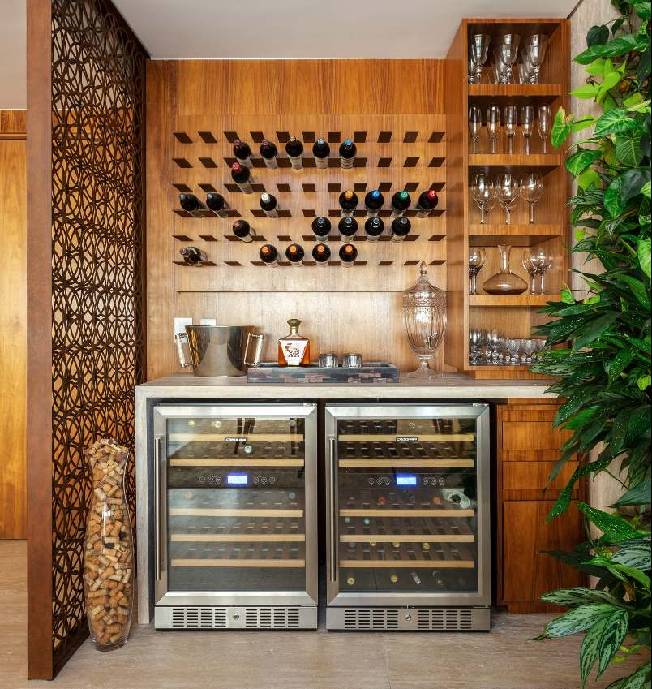

Vinheria Agnello

Para que um bom vinho possa ser apreciado em sua plenitude, é necessário que
ele seja armazenado de forma correta, pois, o mesmo é sensível a fatores externos,
estando sujeito a alterações de sabor, aroma e coloração.
Sinonimo de mal armazenamento é uma expocição demasiada a luz natural, ao excesso de calor,
e movimentações bruscas e constantes a o recipiente que o contém.
Sabendo disso, a Vinheria Agnello© em seus 15 anos de experiência, se especializou nos cuidados
necessários para manter uma excelente qualidade de seus vinhos, buscando sempre satisfazer seus
clientes, principalmente os mais exigentes, garantindo uma proficiência nos cuidados de seus
vinhos de mais alto valor e raridade